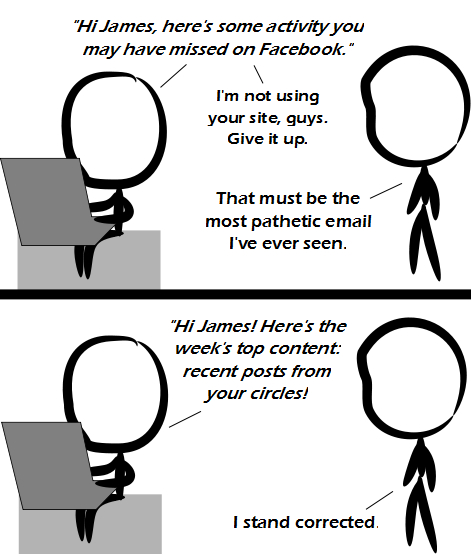

Comic JK 927
When I Feel Like It
⇤
<
?
>
⇥

⇤
<
?
>
⇥
Forum
.
RSS
.
Digg
.
Facebook
.
Reddit
.
Twitter
.
Stumbleupon
Enter your thoughts on number 927 here. Please, no spamming, liking us on Facebook, or plussing... plus one-ining... liking us on Google Plus. > A+++++++! Highly recommended! Would buy again! ++++++++++++! >>Just checked and no, there is no Comic JK page on Facebook or Google+. >>> You generally need real friends to be on Facebook or Google+. >>>> Not really. On Facebook you likely aren't going to get anything out of it if you don't know anyone on there, Google+ that isn't quite the case. ..Which may not be a good thing. And don't mention reddit, hmm? >Reddit doesn't spam you, does it? >> SPAM SPAM SPAM! Would you care for some Spam Spam Bacon Eggs and Spam? like. +1. >>> I DON'T LIKE SPAM! >>>> +1 - in any form or meaning >>>>> Facebook needs a "dislike" button & the ability to like/dislike other likes & dislikes. >>>>>> No - people will just sue them as an accessory to bullying. >>>>>> James likes this. Steve dislikes James' like. while (true) print ("James dislikes Steve's dislike. Steve dislikes James' dislike."); >>>>>>> Steve likes James' dislike *1.05 >>>>>>> James likes Steve's dislike *1.05 >>>>>>> - wait a minute; that's eBay. Hi James. Here's the week's top content: Pictures of your mother banging all of your dorky friends. >+1 (though I don't think Google would allow that). >> They would for a time, until someone reports them and then you just post them again as a different user. >>> That's not really "allowing". >>-1 for repeat! >>>+1 for giving a -1! >>>>Does that math result in a -2? >>>>>Only if you are bad at math. >>>>>>Else -10!